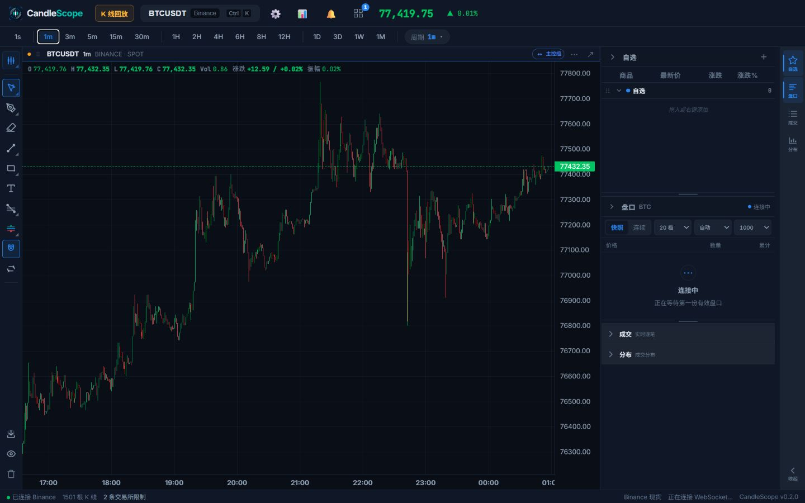
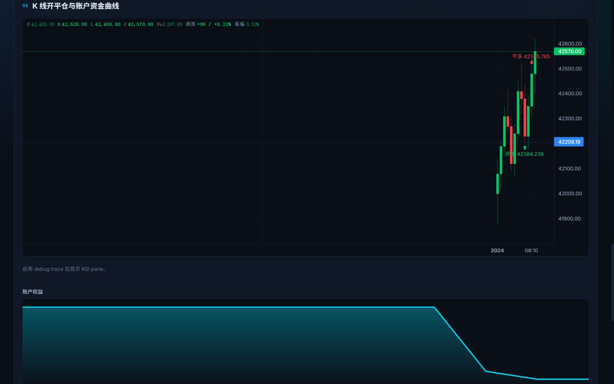

PHASE 0 视觉合同 · 非生产实现
策略测试器当前图表 · BTCUSDT · 1m
草稿尚未创建
净收益-38.47 USDT较上次 +149.99
最大回撤-0.38%峰值 10,000 USDT
完整交易12 个成交
胜率0%本次样本 12 根 K 线
账户权益 · 真实 smoke Run
最近交易 · 平多 42,345.765
下一根 K 线开盘执行。策略条件与 Host 执行原因可分别验证。
查看为什么发生这笔交易SMA Cross · Pyne 策略 · 已自动保存
strategy("SMA Cross")fast = sma(close, 3)slow = sma(close, 5)if crossover(fast, slow) target_position(1)else if crossunder(fast, slow) target_position(targetQty)else target_position(0)需要重新运行。 汇总仅供回看，不代表当前图表；主操作仍只有右上角“运行”。
上次净收益-38.47 USDTBTCUSDT · 15m
上次最大回撤-0.38%结果已冻结
上次完整交易1不投影到当前图表
上次胜率0%等待重新运行
为什么旧标记消失？
周期已经从 15m 切换为 1m。只有完整身份匹配的结果才能投影到图表。
查看过期原因